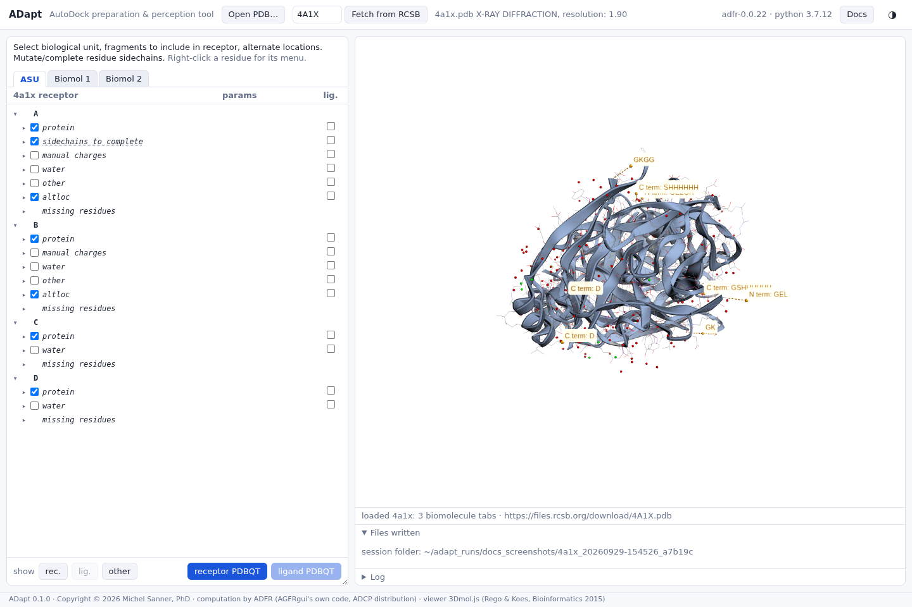

Missing residues
4A1X: see where the model has holes. Gaps in the chain and missing ends are listed in the tree and drawn in the 3D view.
Residues without electron density are not in the model, and the file lists them (its
REMARK 465 records). ADapt compares each chain's sequence with the residues present
and lists what is missing under missing residues:
gap: SER-3--GKGG--PRO2: GKGG is missing between SER -3 and PRO 2;N term: GELandC term: GSHHHHHH: residues missing at the start or end of the chain (here the His tag).


Missing residues are information: nothing is rebuilt, and the PDBQT files are the same whether or not a chain has any. A gap near the pocket is a reason to prefer another assembly or entry, or to model the loop before docking.
A stretch whose ends meet is not shown. If the residues on either side of
a missing stretch are within 3.5 Å of each other (C to N), ADFR treats the chain as continuous
there and does not report it. For example, 1JFF chain A lists residues 35-60 as missing, but
GLY 34 and HIS 61 are 2.68 Å apart.
AGFRgui never showed missing residues, because ADFR's detection had a defect. ADapt uses a corrected copy of it; see ADapt and AGFRgui.